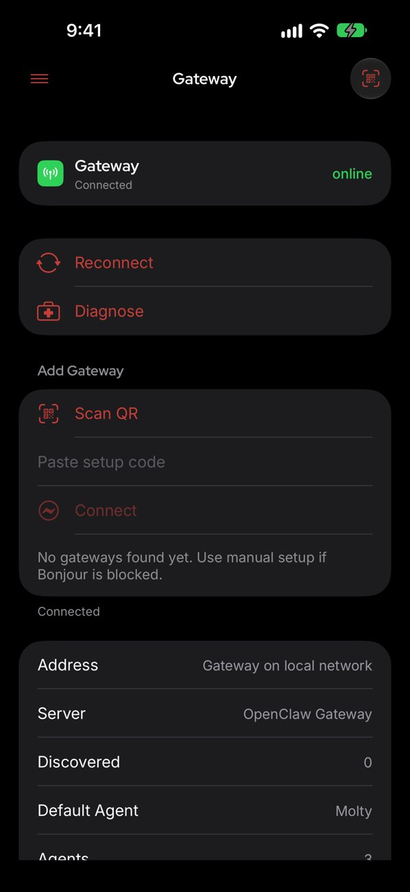

openclawapp 付费账本：这笔 AI 助理的钱花不花，我给你算清楚
从定价拆解到三档用户算账，再到替代方案和结论，把 openclawapp 值不值得掏钱这件事掰开揉碎了说。
它到底值不值得掏钱？这问题我纠结了快两周——从第一次在社区刷到这个名字到现在，试过免费额度、看过付费档位、算了好几轮时间账。今天把这本账本摊开，你对着自己的使用强度对号入座就行。
先认清楚这是什么玩意儿
openclawapp 不是又一个套壳聊天机器人，它的核心卖点是把 AI 做成了一个常驻的助理框架：网关跑在你指定的地方，可以接多个模型提供商，支持 Talk 语音对话、Heartbeat 主动巡检、媒体理解与生成、长期指令记忆这些东西。你可以把它装在本机、跑在服务器、配对手机当语音助手用，甚至连手表端都有入口。说白了，它卖的不是单次对话能力，是「把 AI 嵌进你日常工作流」这件事——它的官网上有一份完整的能力清单。

定价拆解：免费版给了什么，付费版多了什么
从openclawapp下载页拿到安装包后，价格档位我核对了三遍，按订阅方式分三档：
- 免费版：单模型提供商接入，基础聊天与会话管理，不包含 Talk 实时语音、Heartbeat 主动巡检、子智能体调度这三块自动化核心能力。媒体理解有配额限制，图像生成、视频生成、音乐生成这些全部走提供商的按量计费，没有任何额度缓冲。
- 个人版（月付）：解锁全功能，多模型提供商绑定，Talk 语音对话全形态支持（含实时 WebRTC 对讲），Heartbeat 周期性自主巡检可用，子智能体可以并行调度多个长任务。媒体理解配额翻倍，生成类能力附带每月固定额度缓冲。
- 团队版（年付起）：在个人版基础上加了工作区共享、成员权限、审计日志和技术支持通道，适合小团队共用同一个网关实例。
买断制目前没有——官方明确说暂时只做订阅，理由是 Talk 的实时能力和 Heartbeat 的调度逻辑还在快速迭代，买断用户后续功能升级会亏。这点我理解，但也意味着你不能「一次付钱终身躺平」，得持续跟着版本走。
还有一个容易被忽略的成本项：模型提供商的费用是另算的。openclawapp 本身是框架，底层调哪个模型你自己选——走 OpenAI、走本地 MLX、走国内厂商都行，模型的 token 消耗不包含在订阅费里。个人版的额度缓冲只覆盖生成类能力的调用次数，不抵扣 token 成本。这个坑得提前说，不然你以为付了订阅费就万事大吉，月底看提供商账单会吓一跳。
算账：三类用户各算一遍
轻度用户：一周开两三次，每次聊十来分钟
这类人就是把 openclawapp 当作偶尔用的 AI 助手，帮着写点东西、查点资料，不会配自动化，不会开 Talk 语音，就是纯聊天。
免费版完全够用。基础聊天、会话管理、单次媒体理解这些免费版都有，真正卡你的就是「想用 Talk 试试语音对话」或者「想让它定时帮你盯点什么」——这两块免费版不让开。但如果你一周只用两三次，买月付订阅纯属浪费，省下的钱够你在模型提供商那边多买好几轮 token 额度。
轻度用户结论：永远不用付费，除非哪天突然想玩 Talk 语音。
主力用户：每天都开，让它参与工作流
这是付费决策的核心人群。我自己就是这个档位——每天打开好几次，让它帮我处理文档、写点代码、整理素材，偶尔开 Talk 语音在通勤路上聊两句。
先算时间账。个人版月付约三十块人民币（换算自官方定价），如果每天能用它省出二十分钟，一个月就是十个小时。你把这十个小时折算成自己的时薪——哪怕按最低时薪算，三十块换十个小时也是赚的。
再看功能边界。主力用起来，免费版最卡你的三个地方：Talk 语音不让开、Heartbeat 不能用、子智能体调度不让用。Talk 还好说，真想用语音临时找别的工具也行；但 Heartbeat 和子智能体是真刚需——Heartbeat 能让它周期性整理记忆、跟进待办，子智能体能把长任务拆成并行的几个子任务互不干扰。这俩能力是把 openclawapp 从「聊天工具」变成「助理框架」的关键，免费版锁死了这两个，你再怎么用也只是个升级版的聊天窗口。
还有那个媒体配额。主力用户频繁丢截图让它看图、发语音让它转写，免费版的配额一周就见底了，之后每次调用都直接走提供商计费，反而更贵。个人版的配额缓冲刚好覆盖主力用户的日常用量，省得你每次都盯着配额表算。
主力用户结论：闭眼付月付，别犹豫。
重度用户：24 小时网关常驻，多通道同时跑
重度用户是把 openclawapp 当基础设施在用——网关跑在云服务器上，Telegram、Discord、浏览器控制端多个通道同时接入，Heartbeat 每天定时巡检，子智能体并行跑好几个长任务，Talk 语音作为日常交互方式之一。
这类人年付划算。团队版的年付比月付累计下来便宜两成，而且多了工作区共享和技术支持——你跑在服务器上难免遇到问题，有官方通道比自己翻openclawapp文档强。另外重度用户的模型提供商账单本身就不小，个人版的生成额度缓冲可能不够，团队版的缓冲配额再翻一倍，能省点边角料。
还有一个隐性成本：网关的服务器费用。如果你把网关跑在自己的 VPS 上，每个月又多一笔支出。个人版跑在本机可以省掉这个，但本机不能 24 小时常驻，Heartbeat 和定时任务就废了。所以重度用户大概率还是要上服务器，这部分费用得和订阅费一起算。
重度用户结论：年付团队版，配 VPS 常驻，整体成本摊下来最划算。
替代方案：不付钱能走什么路
先说最现实的——直接用主流 AI 平台的网页端或 App。不用装网关、不用配提供商、不用管服务器，打开网页就能聊，语音对话、图像生成这些能力都自带，而且大部分都有免费额度。问题是这些平台的能力是封闭的，你不能把它嵌进自己的工作流，不能让它定时帮你干活，不能配长期指令让它记住你的偏好。说白了，它还是「你主动找它」的模式，不是「它主动帮你」的模式。
再说自托管方案。市面上有开源的 AI 助理框架，但大多只做了聊天会话这一层，Talk 语音、Heartbeat 巡检、子智能体调度这些自动化能力基本没有，或者有也做得很粗糙。你可以自己拼装一套，但花在拼装和调试上的时间，折算成钱可能比个人版订阅贵得多。
还有一种折中路线：用免费版 + 手动模拟自动化。Heartbeat 不让开？你自己定个闹钟，每隔几小时手动喊它整理一下记忆。Talk 不让开？用系统自带的语音转文字把话转成文本贴给它。子智能体不让用？长任务拆成几段手动串行跑。能凑合用，但操作起来很累，用一周你就会意识到「这时间用来多赚三十块不好吗」。
最后收个账本
openclawapp 的付费值不值，核心看你要不要那三个被锁死的能力：Talk 语音、Heartbeat 巡检、子智能体调度。
轻度用户：永远不用付。免费版够你偶尔聊聊天，真有特殊需求临时凑一下就行。
主力用户：月付别犹豫。三十块换每月十小时的省出时间，加上从聊天工具到助理框架的质变，这笔账怎么算都赢。
重度用户：年付团队版。多通道常驻、工作区共享、技术支持，整体成本摊下来最合理，而且年付的心理负担比月付小——付一次管一年，不用每个月纠结要不要续。
这套网关框架的资料我备份在了三个仓库，GitHub 的主仓库更新最快、Gitee 的国内镜像访问更顺、GitCode 的备份副本用来兜底，随便从哪个拿都行。